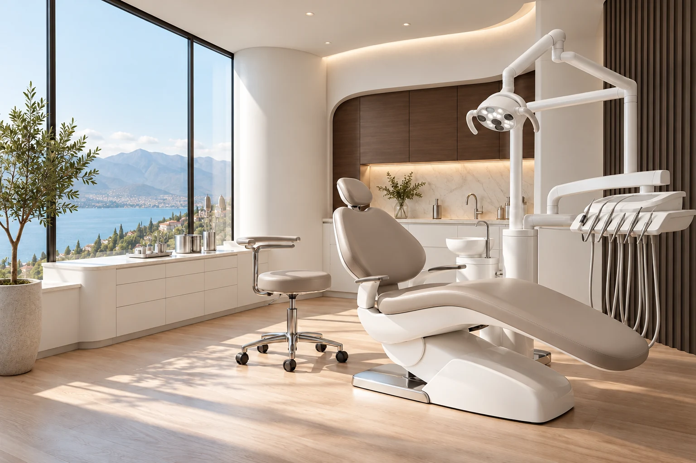

General dentistry
Everyday care, thoughtfully considered.

Dentistry, thoughtfully reimagined
Expertise meets empathy. A considered approach to care, built around the way you want to feel.
02 / Your starting point
Every smile has a story. Start with what’s on your mind, and explore a little of what comes next.
A check-up is a chance to discuss your oral health, ask questions and understand whether any further care is recommended.
Explore the possibilitiesA starting point for a conversation, not a clinical assessment.
03 / The way we see care
HUMAN FIRST. ALWAYS.Care begins with a conversation.
And a little space to be yourself.
Your questions have a place here.
Clear words. Shared understanding.
Your preferences shape the conversation.
Good dentistry is about the details. So is a good experience. Clear explanations, considered choices, and space to feel at ease.
The Stackly philosophy04 / Care, in all its forms
From the everyday to a new beginning. Discover a thoughtful approach to every stage of care.
Explore all servicesEveryday care, thoughtfully considered.
Explore the smile that feels like you.
A clearer direction for your smile.
A conversation about what comes next.
Different ages. One warm welcome.
A good place to start asking.
06 / From hello to what’s next
There’s comfort in knowing what to expect. Here’s how a thoughtful care journey begins.
Let’s get startedA first conversation about your questions, priorities and what a comfortable visit looks like for you.
An individual assessment, with the purpose of each proposed step explained along the way.
Discuss suitable options, alternatives, timing and costs. Make room for a decision you understand.
Get clarity on follow-up, the next appointment and how to raise questions after your visit.
07 / The people behind the experience
Different responsibilities, one shared focus: helping every part of the visit feel connected.
Assessment, clinical explanations and an individual approach to your care.
Meet our approachClear appointment details and practical support before you arrive.
Meet our approachA warm welcome and attention to the small things that help you settle in.
Meet our approach08 / The Smile Journal
09 / Before you begin
A few answers for the questions you might be carrying.
Ask another questionYour first visit is a chance to share your concerns and discuss your dental history. The clinician explains any proposed assessment and talks through the next steps with you.
Absolutely. Tell the team what would help you feel comfortable. You can ask questions, discuss breaks and share preferences before an examination.
Start with an assessment and a conversation with a qualified dental professional. Suitability, alternatives, costs and any risks should be discussed before you decide.
Any proposed treatment should be explained in plain language, including the steps, expected timing and costs. Ask for clarification whenever you need it.
10 / Your next chapter
Bring your questions. Bring yourself.
We’ll start with a conversation.